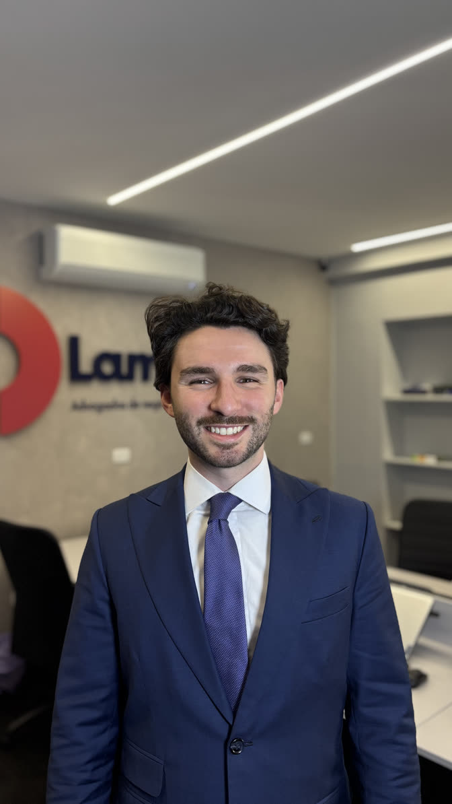
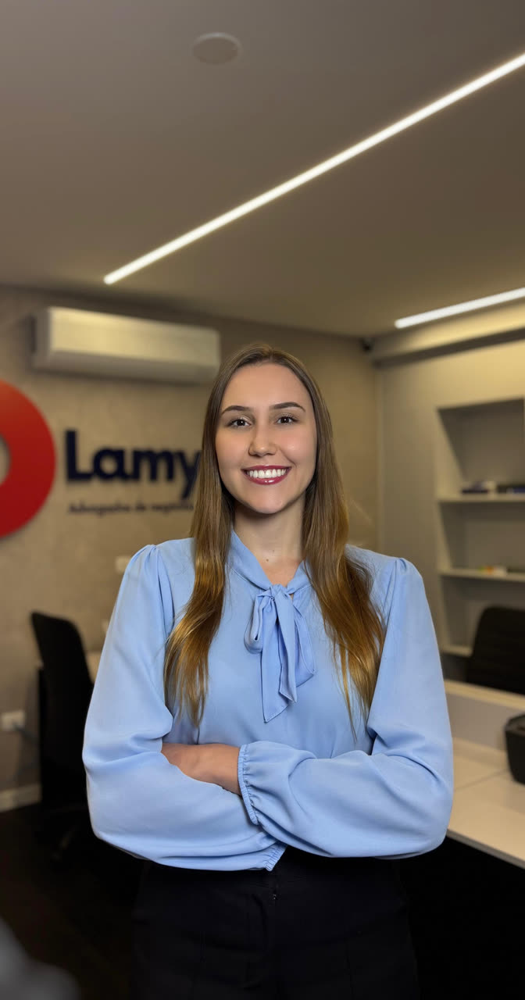

Empresas que vendem
em marketplace
Plataformas como Mercado Livre, Amazon e Shopee. Redução de tributos, recuperação de valores e organização da operação digital.
Atuação voltada à redução de custos tributários, organização empresarial e decisões mais seguras para o crescimento do negócio.
Atuação voltada exclusivamente a empresas, com foco em organização tributária e estrutura jurídica.
Plataformas como Mercado Livre, Amazon e Shopee. Redução de tributos, recuperação de valores e organização da operação digital.
Operação própria de vendas online. Estruturação e revisão tributária.
Operação com impacto tributário direto nos custos. Revisão fiscal e estrutura empresarial.
Operação contínua com complexidade tributária. Ajuste de enquadramento e redução de carga.
Alto volume de vendas e operação ativa. Recuperação tributária e organização fiscal.
Cadeias com múltiplos regimes. Otimização e estruturação tributária.
Negócios em expansão. Organização jurídica e planejamento.

SÓCIO
Graduado em Direito na Universidade Federal do Paraná. Pós-graduado em Direito Tributário pela FAE Business School. Especialista em Tributação de Fusões e Aquisições pelo Insper. Premiado com o título de Melhor Memorial da Fazenda Pública no IV Tax Moot Brazil. Membro da Comissão de Direito
SÓCIO
Graduado em Direito na Universidade Positivo. Pós-graduado em Direito Empresarial com ênfase em Recuperações Judiciais e Falências pela PUC-RS. Membro da Comissão de Direito Tributário da OAB/PR. Lidera os departamentos Empresarial e Comercial do escritório Lamy
GERENTE DO CONSULTIVO TRIBUTÁRIO
Graduando em Direito pela Universidade Positivo. Membro do Clube de Estudos Tributários da Universidade Positivo. Profissional atuante no setor tributário há mais de cinco anos.Idiomas: Português (nativo) e Inglês (fluente).
ESTAGIÁRIA DO CONSULTIVO TRIBUTÁRIO
Graduanda em Direito na FAE Business School e premiada entre as melhores alunas da instituição em 2025/2. Membro do grupo de estudos Tax Moot CARF 2026 pela FAE Business School. Vencedora do Open Pitch na Semana de Empreendedorismo FAE 2025.

ADVOGADA DO CONTENCIOSO TRIBUTÁRIO
Graduada em Direito pelo Centro Universitário Curitiba (UNICURITIBA). Pós-graduanda em Direito Público pela Pontifícia Universidade Católica do Rio Grande do Sul (PUCRS). Membro do grupo de estudos Tax Moot CARF da FAE Business School. Membro da Comissão de Direito

A vedação da Portaria nº 6.757/22 da PGFN à adesão de débitos tributários inscritos em dívida ativa há menos de 90 dias foi afastada por decisão do TRF3.

Um dos principais equívocos tributários no e-commerce é a inclusão do ICMS-DIFAL na base de cálculo do PIS e da COFINS.

Como empresas brasileiras devem se preparar para as novas exigências de compliance transfronteiriço na era digital.
Basta preencher as informações iniciais na calculadora disponível no site ou entrar em contato diretamente com o escritório.
Uma análise tributária identifica oportunidades de redução de carga e recuperação de valores pagos indevidamente.
Sim, dependendo do regime e da operação, empresas do Simples podem ter direito a créditos e revisões tributárias.
Sim, a tributação em marketplaces envolve particularidades que exigem planejamento específico.
Sim, a operação digital acrescenta camadas de complexidade fiscal que merecem revisão periódica.
É o processo de identificar e reaver tributos pagos a maior ou indevidamente ao longo do tempo.
O foco principal é tributário e empresarial, com atuação também em contratos e estruturação jurídica.
Em mudanças de operação, crescimento, novos parceiros ou alterações regulatórias relevantes.
Sim, a atuação é voltada exclusivamente a empresas e negócios.
Não. O escritório atua de forma complementar à contabilidade existente.
Não. O atendimento pode ser presencial ou remoto, conforme a necessidade do cliente.
Você pode iniciar pelo formulário, calculadora ou WhatsApp para uma conversa inicial.
Preencha a calculadora no site ou solicite contato com um especialista.
Entenda como reduzir custos e estruturar melhor o seu negócio.
Telefone / WhatsApp
Endereço
Av. Paulista, 1200 - 14º Andar, São Paulo - SP